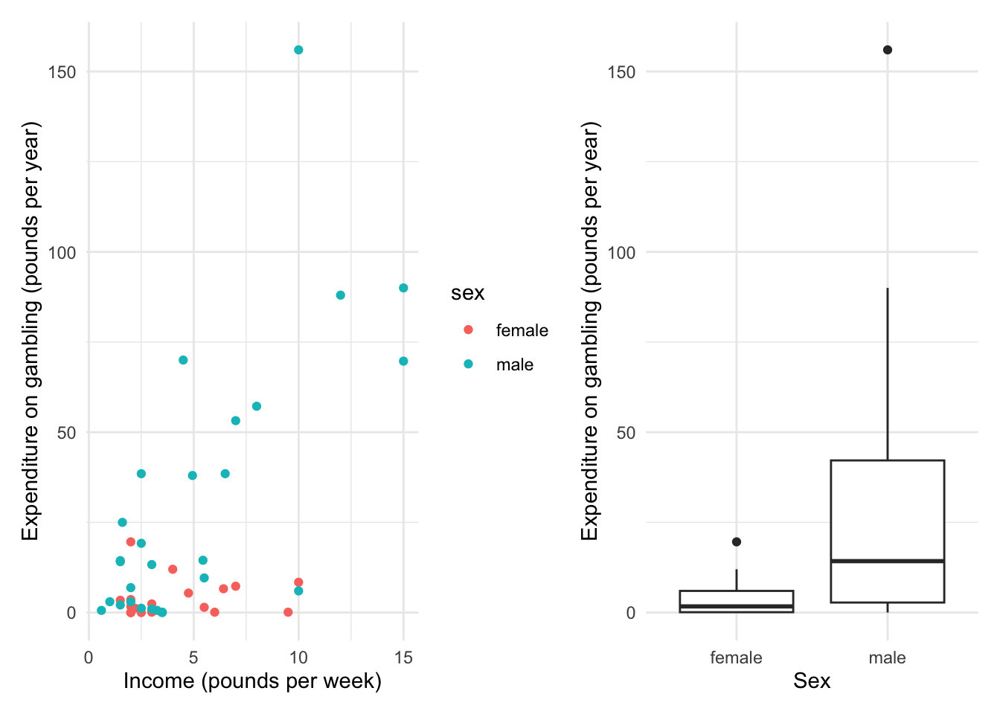
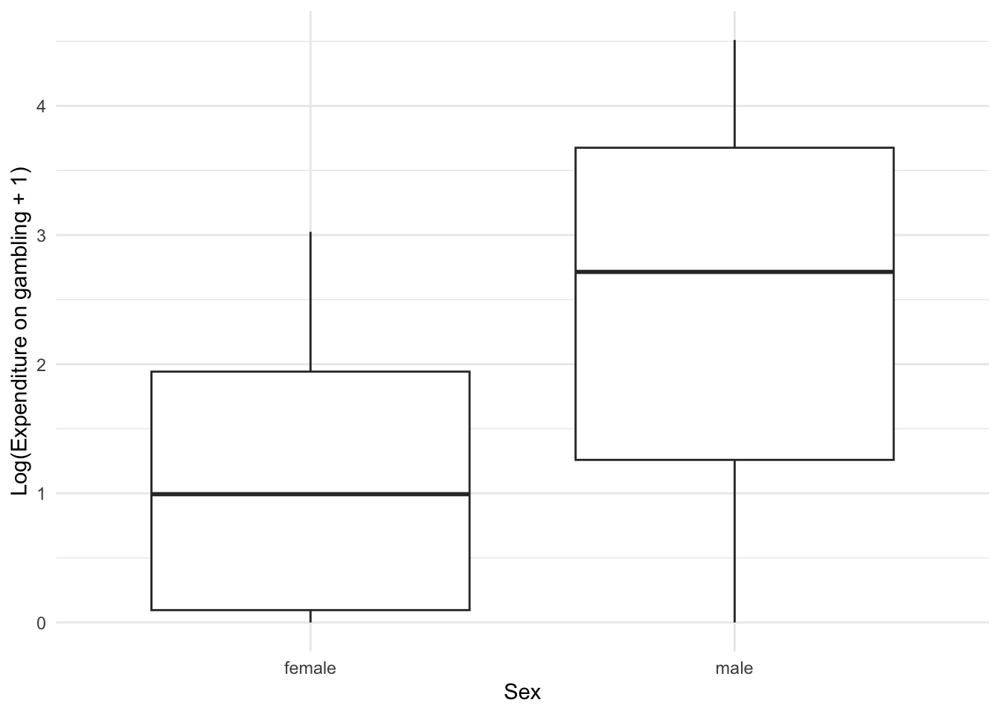
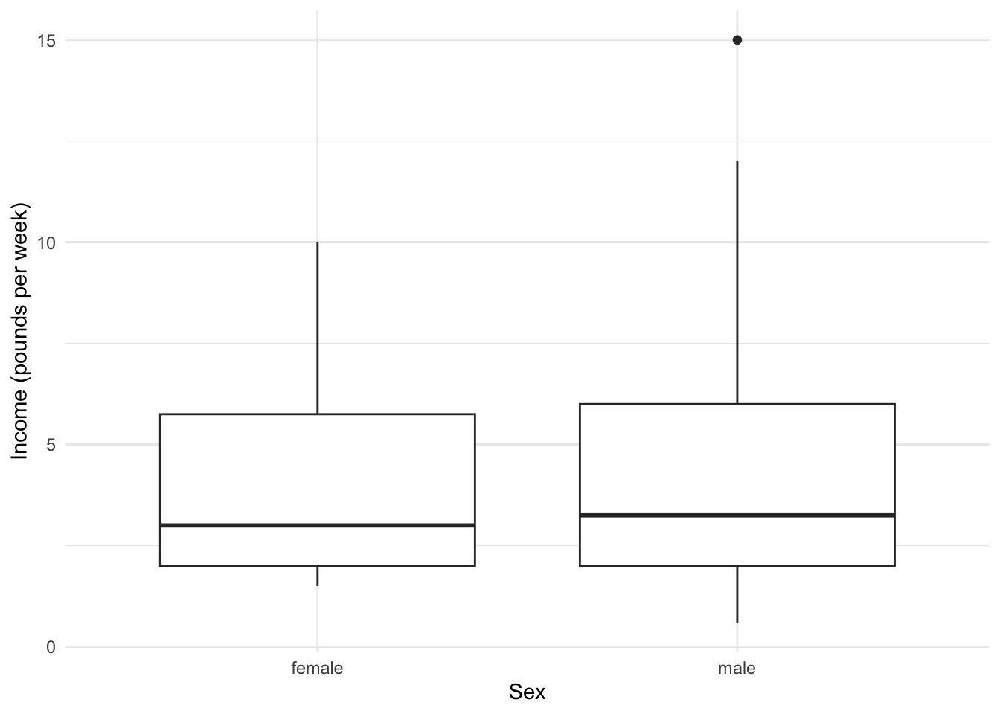
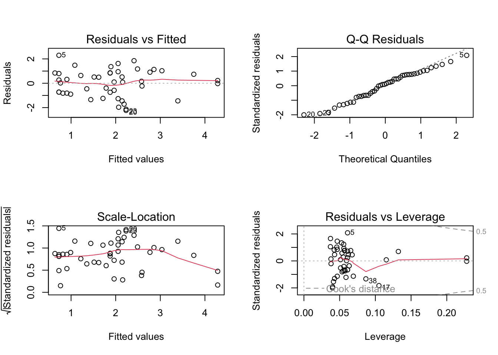
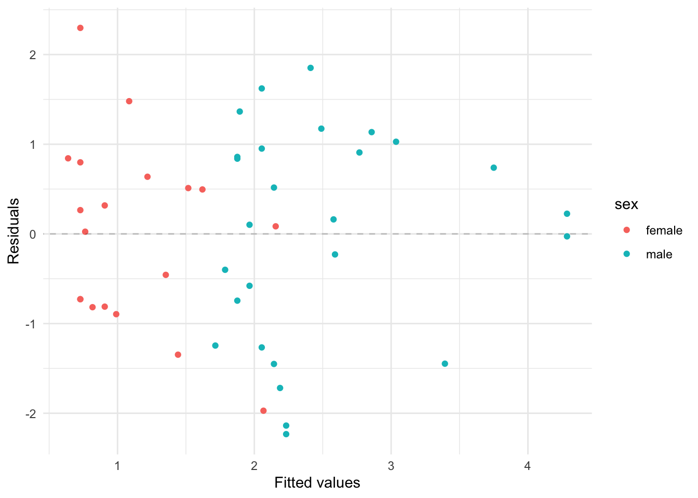

| sex | status | income | verbal | gamble |
|---|---|---|---|---|
| female | 51 | 2.00 | 8 | 0.0 |
| female | 28 | 2.50 | 8 | 0.0 |
| female | 37 | 2.00 | 6 | 0.0 |
| female | 28 | 7.00 | 4 | 7.3 |
| female | 65 | 2.00 | 8 | 19.6 |
| female | 61 | 3.47 | 6 | 0.1 |
Introduction
This analysis examines factors influencing teenage gambling expenditure. We explore the relationships between annual expenditure, gender, and weekly income. Our hypothesis is that both gender and income affect teenagers’ gambling expenditure.
Data
The analysis uses data from (Ide-Smith and Lea 1988), a survey of teenage gambling behaviour in Britain.
The key variables are:
- sex
- status : Socioeconomic status score based on parents’ occupation
- income : Weekly income in pounds
- verbal : Verbal score (number of words defined correctly, out of 12)
- gamble : Annual expenditure on gambling in pounds
A cursory look at the data suggests that females likely spend less on gambling compared to males. Additionally, most females do not spend more than approximately £20 per year on gambling.
There also seems positive association between income and amount spent on gambling (at least for males). This is not very surprising as one would expect that individuals with higher income would be able to spend more on gambling.
From what this plot indicates, it may be worth evaluating if there is a differential effect of income based on gender.

Analysis
The response variable gamble is non‑negative and strongly right‑skewed. We therefore model log(gamble + 1). Adding £1 ensures the log is defined for zero spenders, keeps small expenditures near zero on the transformed scale, and avoids introducing artificial extreme negative values. Note this is different from a GLM with a log link: here we model the (logged) response directly, which changes how effects are interpreted on the original scale.
Observation 24 (gamble = £156) appears to be an outlier and is removed from the analysis.
Effect of Gender
It seems plausible that males are spending more on gambling compared to females. This is also indicated by the boxplot below. We will evaluate this hypothesis using a simple linear model with log(gamble + 1) as response and sex as explanatory variable.

Analysis of Variance Table
Response: log_gamble
Df Sum Sq Mean Sq F value Pr(>F)
sex 1 20.365 20.365 12.261 0.001074 **
Residuals 44 73.085 1.661
---
Signif. codes: 0 '***' 0.001 '**' 0.01 '*' 0.05 '.' 0.1 ' ' 1Gender seems to have statistically significant association with gambling expenditure.
Anova procedure is equivalent to a t-test with constant variance assumption (Faraway 2025), which seems fair from the Boxplot above. They test for the same effect and result in identical p-values.
Before moving to analysing joint effect of Income and Gender, it is imperative to check if the effect of gender is not due to confounding by income. It could well be the case that individuals with higher income spend more on gambling. But then if high income itself is associated with gender, then the above effect of gender may be spurious. We will explore this next.

Analysis of Variance Table
Response: income
Df Sum Sq Mean Sq F value Pr(>F)
sex 1 4.58 4.5754 0.3685 0.5469
Residuals 44 546.25 12.4149 The above plot and the test indicates that income is not significantly associated with gender and hence does not mask its effect on gambling expenditure.
For the analysis that follows, we shall print the summary of gender only model to show the Estimate value and Std. Error of gender.
summary(gender_model)
Call:
lm(formula = log_gamble ~ sex, data = teengamb)
Residuals:
Min 1Q Median 3Q Max
-2.4630 -1.0616 0.1547 1.0979 2.0478
Coefficients:
Estimate Std. Error t value Pr(>|t|)
(Intercept) 1.1117 0.2957 3.760 0.000498 ***
sexmale 1.3513 0.3859 3.502 0.001074 **
---
Signif. codes: 0 '***' 0.001 '**' 0.01 '*' 0.05 '.' 0.1 ' ' 1
Residual standard error: 1.289 on 44 degrees of freedom
Multiple R-squared: 0.2179, Adjusted R-squared: 0.2002
F-statistic: 12.26 on 1 and 44 DF, p-value: 0.001074Effect of Gender and Income
With income variable included alongside sex, the effect of sex remains significant (although is reduced from 1.35 to 1.24 with lower Std. Error).
Income itself is significantly associated with gambling expenditure.
The intercept is non-significant indicating that for reference class (female), gambling expenditure is likely 0£ if they have close to 0 income and it makes intuitive sense (although for adults and addicts this may not necessarily be true).
This model does not include an interaction between sex and income for simplicity, yet it fits the data well. Model diagnostics appear acceptable.
Call:
lm(formula = log_gamble ~ sex + income, data = teengamb)
Residuals:
Min 1Q Median 3Q Max
-2.2327 -0.7944 0.1318 0.8419 2.2973
Coefficients:
Estimate Std. Error t value Pr(>|t|)
(Intercept) 0.37092 0.33009 1.124 0.267373
sexmale 1.23699 0.34216 3.615 0.000782 ***
income 0.17852 0.04869 3.667 0.000671 ***
---
Signif. codes: 0 '***' 0.001 '**' 0.01 '*' 0.05 '.' 0.1 ' ' 1
Residual standard error: 1.138 on 43 degrees of freedom
Multiple R-squared: 0.4042, Adjusted R-squared: 0.3765
F-statistic: 14.59 on 2 and 43 DF, p-value: 1.46e-05
Additionally, the residuals do not indicate any obvious pattern with respect to gender.

From earlier plots we suspected a possible differential effect of income by gender. Fitting an interaction did not improve fit and the interaction term is not significant, so the simpler additive model is preferred.
Analysis of Variance Table
Model 1: log_gamble ~ sex * income
Model 2: log_gamble ~ sex + income
Res.Df RSS Df Sum of Sq F Pr(>F)
1 42 53.517
2 43 55.676 -1 -2.1582 1.6938 0.2002Additionally, interaction term is not significant and so it is best to remove it and keep the model simple.
Call:
lm(formula = log_gamble ~ sex * income, data = teengamb)
Residuals:
Min 1Q Median 3Q Max
-2.1894 -0.9791 0.0763 0.8456 2.0447
Coefficients:
Estimate Std. Error t value Pr(>|t|)
(Intercept) 0.85855 0.49761 1.725 0.0918 .
sexmale 0.58832 0.60303 0.976 0.3348
income 0.06101 0.10240 0.596 0.5545
sexmale:income 0.15114 0.11613 1.301 0.2002
---
Signif. codes: 0 '***' 0.001 '**' 0.01 '*' 0.05 '.' 0.1 ' ' 1
Residual standard error: 1.129 on 42 degrees of freedom
Multiple R-squared: 0.4273, Adjusted R-squared: 0.3864
F-statistic: 10.45 on 3 and 42 DF, p-value: 2.921e-05Conclusion
Both gender and income are significantly associated with teenage gambling expenditure. Males spend about three times more than females on average (note: reporting biases could inflate this effect; boys may over-report and girls may under-report (Ide-Smith and Lea 1988)). A £1 increase in weekly income is associated with an approximate 19% increase in annual gambling expenditure on the log scale interpretation. The interaction between gender and income was not significant, suggesting the effect of income is similar across genders.
References
Faraway, Julian J. 2025. Linear Model with r, Third Edition. CRC Press.
Ide-Smith, Susan G., and Stephen E. G. Lea. 1988. “Gambling in Young Adolescents.”